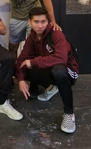
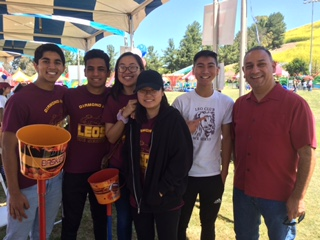
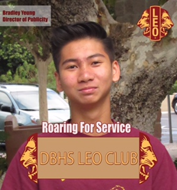
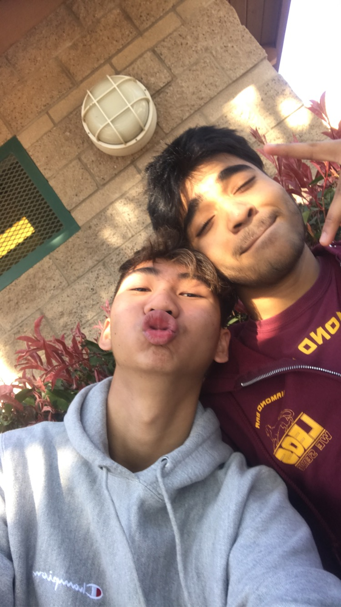

<!DOCTYPE html>
<html lang="en">

<head>

  <meta charset='UTF-8'>
  <meta name="viewport" content="width=device-width, initial-scale=1, shrink-to-fit=no">
  <link rel="shortcut icon" href="img/penguin.ico">
  <meta name="buisness" content="helping people learn about business">
  <meta name="author" content="862234077">

  <title>Bradley Yeung - Business Administration</finance>

  <!-- Bootstrap core CSS -->
  <link href="vendor/bootstrap/css/bootstrap.min.css" rel="stylesheet">

  <!-- Custom fonts for this template -->
  <link href="https://fonts.googleapis.com/css?family=Saira+Extra+Condensed:500,700" rel="stylesheet">
  <link href="https://fonts.googleapis.com/css?family=Muli:400,400i,800,800i" rel="stylesheet">
  <link href="vendor/fontawesome-free/css/all.min.css" rel="stylesheet">

  <!-- Custom styles for this template -->
  <link href="css/resume.min.css" rel="stylesheet">

</head>

<body id="page-top">
  <nav class="navbar navbar-expand-lg navbar-dark bg-primary fixed-top" id="sideNav">
    <a class="navbar-brand js-scroll-trigger" href="#page-top">
      <span class="d-block d-lg-none">John Doe</span>
      <span class="d-none d-lg-block">
        
      </span>
    </a>
    <button class="navbar-toggler" type="button" data-toggle="collapse" data-target="#navbarSupportedContent" aria-controls="navbarSupportedContent" aria-expanded="false" aria-label="Toggle navigation">
      <span class="navbar-toggler-icon"></span>
    </button>
    <div class="collapse navbar-collapse" id="navbarSupportedContent">
      <ul class="navbar-nav">
        <li class="nav-item">
          <a class="nav-link js-scroll-trigger" href="#about">About</a>
        </li>
        <li class="nav-item">
          <a class="nav-link js-scroll-trigger" href="#experience">Experience</a>
        </li>
        <li class="nav-item">
          <a class="nav-link js-scroll-trigger" href="#education">Education</a>
        </li>
        <li class="nav-item">
          <a class="nav-link js-scroll-trigger" href="#portfolio">Portfolio</a>
        </li>
      </ul>
    </div>
  </div>
  </nav>

  <div class="container-fluid p-0">

    <section class="resume-section p-3 p-lg-5 d-flex align-items-center" id="about">
      <div class="w-100">
        <h1 class="mb-3">John Doe
        </h1>
        <div class="subheading mb-5">Business Administration📚</div>
        <p class="lead mb-4">Enter bio here<br><br>

        Enter bio here<br>Yeah I'm not gonna write 500 words but i will copy paste samples of bios. Debra Carroll knows that successful students become successful adults. This is her 15th year at Edison Elementary School and her 10th year teaching fourth grade. So far, fourth grade is her favorite grade to teach! Mrs. Carroll was the 2011 Newell Unified School District Teacher of the Year, and received her National Board Certification in 2013. She loves science and majored in biology at Arizona State University, where she also earned her teaching credential and Master of Education degree. Mrs. Carroll is excited to begin the best year ever!Manuel Iglesias draws from his life story when writing about the experiences of migrant workers. His first series of poems, My Father's Hands, appeared in The New Yorker and describes how his family crossed the Texas border to give Manuel and his brothers a better life. After receiving his Master's in Fine Arts from Columbia University, Manuel wrote three nonfiction novels about his experiences, including Under the Streaming Sun, which earned the National Prize for Arts and Sciences in 2008. Manuel is currently working on a collection of fictional short stories to be published in early 2021.Melanie Sato opens the line of communication between clients, customers, and businesses to get projects done. With over 20 years in both public and private sectors, Melanie has experience in management consultation, team building, professional development, strategic implementation, and company collaboration. Melanie has managed projects at TechPoint International, Cyberry, and Induster, where she was a finalist for the PMI® Project of the Year. Melanie holds an MBA from Dartmouth University and a current PMP® certification.Karmen Barić connects online brands to their target audiences for the perfect marketing experience. At the University of California, Davis, Karmen learned the importance of applying classic marketing techniques to modern brand strategies from experts in the field, including her Communications professor, Dr. Martin Mitchell. Recently she finished a research paper on customer conversion and participated in a group project on improving SEO. Karmen is currently finishing her Bachelor of Arts in Communications and hopes to intern in an online marketing department in the near future.
Dr. Jonas Frederikson is an orthopedic surgeon who believes that patient care should be a physician's first priority. He specializes in laparoscopic procedures that minimize pain and recovery time, and has expertise in minimally invasive total knee replacement surgeries. Awarded the Distinguished Service Award from the American Medical Association in 2017, Dr. Frederikson has been published in both the Journal of the American Podiatric Medical Association and the New England Journal of Medicine. He holds a medical degree from the Medical University of South Carolina, where he completed a postdoctoral fellowship in the field of orthopedic medicine.Tim Cook is the CEO of Apple and serves on its board of directors. Before being named CEO in August 2011, Tim was Apple's chief operating officer and was responsible for all of the company's worldwide sales and operations, including end-to-end management of Apple's supply chain, sales activities, and service and support in all markets and countries. He also headed Apple's Macintosh division and played a key role in the continued development of strategic reseller and supplier relationships, ensuring flexibility in response to an increasingly demanding marketplace.
<br>

        Enter bio here
        </p>
        <div class="social-icons">
          <a target="_blank" id="socialicon-1" href="https://www.twitch.tv/">
            <i class="fab fa-linkedin-in"></i>
          </a>
          <a target="_blank" id="socialicon-2" href="https://github.com/byeun003">
            <i class="fab fa-github"></i>
          </a>
          <a target="_blank" id="socialicon-3" href="https://twitter.com/bradyeung21">
            <i class="fab fa-twitter"></i>
          </a>
          <a target="_blank" id="socialicon-4" href="mailto:bcyeung21@gmail.com">
            <i class="fa fa-envelope"></i>
          </a>
        </div>
      </div>
    </section>

    <hr class="m-0">

    <section class="resume-section p-3 p-lg-5 d-flex justify-content-center" id="experience">
      <div class="w-100">
        <h2 class="mb-5">Experience</h2>

        <div class="resume-item d-flex flex-column flex-md-row justify-content-between mb-5 experience">
          <div class="resume-content">
            <h3 class="mb-0">Developer</h3>
            <div class="subheading mb-3"><a target="_blank" href="https://yourcompany.com">Company</a></div>
            <p>
              • Worked at a Rice factory<br> 
              • Volunteered in my community<br>
              • Spent summers volunteering for a science camp<br>
            </p>
          </div>
          <div class="resume-date text-md-right">
            <span class="text-primary">March 2019 - Present</span>
          </div>
        </div>

        <div class="resume-item d-flex flex-column flex-md-row justify-content-between mb-5 experience">
          <div class="resume-content">
            <h3 class="mb-0">UC Riverside</h3>
            <div class="subheading mb-3">1st year buisness student</div>
          </div>
          <div class="resume-date text-md-right">
            <span class="text-primary">October 2020 - present</span>
          </div>
        </div>


        <div class="resume-item d-flex flex-column flex-md-row justify-content-between mb-5 experience">
          <div class="resume-content">
            <h3 class="mb-0">Teaching Assistant</h3>
            <div class="subheading mb-3"><a target="_blank" href="https://ucr.edu">University of California Riverside</a></div>
            <p>
            • Ran sessions to help students learn how to code<br>
            • Reviewed and graded student coding projects<br>
            • Created educational content to help promote student education<br>
            • TA'd for over 400 students each academic quarter<br>

          </p>
          </div>
          <div class="resume-date text-md-right">
            <span class="text-primary">January 2011 - January 2016</span>
          </div>
        </div>


      </div>

    </section>

    <hr class="m-0">

    <section class="resume-section p-3 p-lg-5 d-flex align-items-center" id="education">
      <div class="w-100">
        <h2 class="mb-5">Education</h2>

        <div class="resume-item d-flex flex-column flex-md-row justify-content-between mb-5 education">
          <div class="resume-content">
            <h3 class="mb-0">UC Riverside</h3>
            <div class="subheading mb-3">Masters of Business Administration</div>
            <div>MBA in International Business</div>
          </div>
          <div class="resume-date text-md-right">
            <span class="text-primary">August 2018 - December 2019</span>
          </div>
        </div>

        <div class="resume-item d-flex flex-column flex-md-row justify-content-between mb-5 education">
          <div class="resume-content">
            <h3 class="mb-0">University of California Riverside</h3>
            <div class="subheading mb-3">Postgraduate Certificate in Business Management</div>
            <div>Project Management</div>
          </div>
          <div class="resume-date text-md-right">
            <span class="text-primary">June 2017</span>
          </div>
        </div>

        <div class="resume-item d-flex flex-column flex-md-row justify-content-between mb-5 education">
          <div class="resume-content">
            <h3 class="mb-0">University of California Riverside</h3>
            <div class="subheading mb-3">Business Administration</div>
            <div>Information Systems</div>
          </div>
          <div class="resume-date text-md-right">
            <span class="text-primary">August 2012 - May 2016</span>
          </div>
        </div>

      </div>
    </section>

    <hr class="m-0">

    <section class="resume-section p-1 p-lg-5 d-flex align-items-center" id="portfolio">
      <div class="w-100">
        <h2 class="mb-5">Portfolio</h1>
        <center>
            
            <br>
            
            <br>
        </center>
      </div>
    </section>

    <hr class="m-0">
    <center>&copy; <script type="text/javascript">
  document.write(new Date().getFullYear());
  </script> John Doe</center><br>
  </div>
  <!-- Bootstrap core JavaScript -->
  <script src="vendor/jquery/jquery.min.js"></script>
  <script src="vendor/bootstrap/js/bootstrap.bundle.min.js"></script>

  <!-- Plugin JavaScript -->
  <script src="vendor/jquery-easing/jquery.easing.min.js"></script>

  <!-- Custom scripts for this template -->
  <script src="js/resume.min.js"></script>
</body>
</html>
